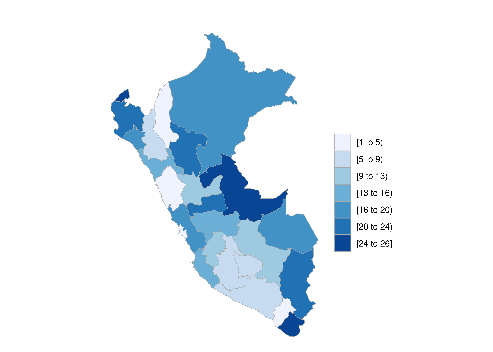
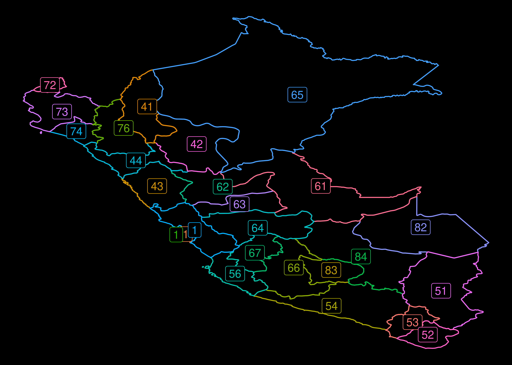
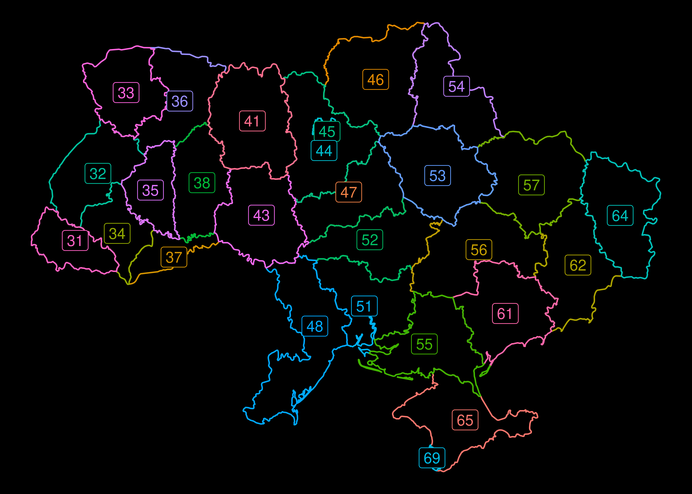

pacman::p_load(rvest, readr, tidyverse, magrittr, data.table)
pacman::p_load(sf, rnaturalearth)
pacman::p_load(choroplethr, choroplethrAdmin1)
pacman::p_load(stringr, ggdark)AreaCodeR
1) Load Packages
Leaflet allows for interactive maps, only in Simple Features (sf)
Choroplethr uses ggplot and data frames converted from shapefiles (sp)
countries <- ne_countries(returnclass = "sf") %>% st_transform(8857) 2) Proof of Concept: Peru
Let’s start by making a telephone area code map of Peru.
2-1: Get Telephone Data
First, we need to pull the area code data from wikipedia:
2-1-0: Read website and scrape data
pe_site <- read_html("https://en.wikipedia.org/wiki/Telephone_numbers_in_Peru")
pe_wp <- html_elements(pe_site, css = " .wikitable")
wiki_table <- html_table(pe_wp)
pe_df <- wiki_table[[1]]Clean/format said data
Automating this in general seems difficult
pe_df %<>% rbind(c(1, "Callao"))
pe_df[1,2] <- "Lima"
for(i in 1:nrow(pe_df)) {
pe_df[i,2] <- paste0("region de ", tolower(pe_df[i,2]))
}
pe_df[pe_df[,2]=="region de moquegua",2] <- "departamento de moquegua"
pe_df %<>% rbind(c(1, "provincia de lima"))
names(pe_df) %<>% tolower()
names(pe_df)[names(pe_df) == "area code"] <- "value"2-2: Get Regions of Peru
Aside
The following gives an example choroplethr map for Peru:
peru_regions <- get_admin1_regions("peru")
peru_regions$value = 1:nrow(peru_regions)
admin1_choropleth("peru", peru_regions)
admin_pe <- get_admin1_regions("peru")[,2]
admin_spots <- stringdist::amatch(unlist(pe_df[,2]), admin_pe, maxDist = "10")
pe_df[,2] <- admin_pe[admin_spots]
pe_df <- aggregate(
cbind(long, lat) ~ region,
data = get_admin1_map("peru"),
FUN = function(x) mean(range(x))
) %>%
merge(., pe_df, by = "region")2-3: Final Step – Plot Peru
ggplot(
get_admin1_map("peru"),
aes(long, lat, color = region)
) +
geom_path(
aes(group = group),
show.legend = F
) +
geom_label(
data = pe_df,
aes(long, lat, label = value, color = region),
show.legend = F
) +
ggdark::dark_theme_void()Inverted geom defaults of fill and color/colour.
To change them back, use invert_geom_defaults().
3) Ukraine
3-1: Read + Format Data
ua_wiki <- read_html(
"https://en.wikipedia.org/wiki/List_of_dialling_codes_in_Ukraine")
ua_he <- html_elements(ua_wiki, css = "h3 .mw-headline")
ua_reg_edit <- html_text2(ua_he)
Encoding("–")[1] "UTF-8"splits <- str_split(ua_reg_edit, " – ", simplify = T)
ua_df <- data.frame(region = splits[,2], value = splits[,1])3-2: Get Regions
## In Ukraine, Level 1 admin regions are called "Oblasts"
admin_ua <- get_admin1_regions("ukraine")[,2]
admin_spots <- stringdist::amatch(ua_df[,1], admin_ua, maxDist = "8")
ua_df[,1] <- admin_ua[admin_spots]
missing <- setdiff(admin_ua, ua_df[, 1])
ua_df[which(ua_df[,1] %>% is.na()), 1] <- missing
ua_df <- aggregate(
cbind(long, lat) ~ region,
data = get_admin1_map("ukraine"),
FUN = function(x) mean(range(x))
) %>%
merge(ua_df, ., by = "region")
ua_adjust <- function(val, lat_adj = 0, long_adj = 0) {
tmp <- copy(ua_df)
if (lat_adj != 0) {
tmp[tmp$value == val,]$lat %<>% sum(lat_adj)
}
if (long_adj != 0 ) {
tmp[tmp$value == val,]$long %<>% sum(long_adj)
}
return(tmp)
}
ua_df <- ua_adjust(48, long_adj = 0.5, lat_adj = 0.25)
ua_df <- ua_adjust(45, long_adj = -0.1, lat_adj = 0.1)
ua_df <- ua_adjust(44, lat_adj = -0.25)3-3: Plot Ukraine
ggplot(get_admin1_map("ukraine"), aes(long, lat, color=region)) +
geom_path(aes(group=group), show.legend = F) +
geom_label(data=ua_df, aes(long, lat, label=value, color=region), show.legend = F) +
ggdark::dark_theme_void()